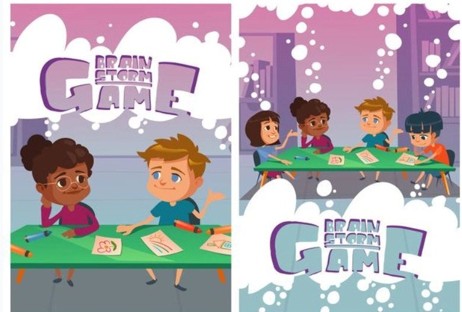

Answer: True
Peanuts are related to peas and beans, some kids with peanut allergies can still eat tree nuts like walnuts and almonds. But peanut proteins are like tree nuts. That means kids who are allergic to peanuts are more likely to be allergic to tree nuts than other people. Talk to your doctor about what else to avoid.
2. Milk allergy and lactose intolerance are the same thing.
Answer: True
Lactose intolerance is the inability to digest the sugar in milk and other dairy products. On the flip side with the milk allergy, the symptoms are not only seen along just the digestive system but other parts of the body as well. These symptoms can seem as they both cause vomiting and stomach ache within about 30 minutes. Your pediatrician can help you figure out which one your child has.
3. It is okay to not reading ingredients list again if you have purchased the food several times.
Answer: False
You should read the ingredients every time to make sure the food label hasn't changed.
4. How quickly do most children develop a severe allergic reaction to food?
Answer: 1 Hour
Symptoms of an anaphylactic reaction to food - rash, dizziness, swelling, trouble breathing - usually show up within an hour. Or it could be anywhere from a few seconds to a few hours. Some people have a second reaction hours later. That's why, even if your child seems to recover from a severe reaction, they should still go to the hospital so the staff can observe them for 4 to 6 hours.
5. Can your child be cured by over-the-counter medication if you child eats the foods and gets hives?
Answer: True
For a minor reaction to food, like a rash, most children can take a liquid antihistamine like diphenhydramine. This over-the-counter product can relieve hives and itching.
6. Kids can outgrow some food allergies.
Answer: True
Most children outgrow milk, soy, egg, and wheat allergies by the end of their teen years. Many kids outgrow them by the time they're 5 years old. On the other hand, kids with peanut, tree nut, or seafood allergies usually have them for life. Your pediatrician or allergist can do tests to see if your child's allergy has gone away.
7. Which of the following foods are most likely to cause a severe allergic reaction?
Answer: All of above
Shellfish include shrimp, lobsters, and oysters. An allergic reaction to either shellfish, tree nuts or wheat is usually life-threatening.
8. Allergy shots can cure food allergies.
Answer: False
Allergy shots, also known as immunotherapy, may help if they are allergic to things you inhale, like pollen or mold. But they don't really work for food allergies. Allergies cannot be cured by medications, medications only treat minor or major symptoms. Your child's doctor can help manage their allergy symptoms and come up with a plan to treat severe reactions
9. Food allergies that cause anaphylaxis are on the rise.
Answer: True
If your child has had an anaphylactic reaction, have an emergency plan in place. Read labels carefully for food ingredients. If their doctor has prescribed epinephrine, keep it handy wherever they spend time alone. Teach family, friends, caregivers, and school staff what to do in an emergency.